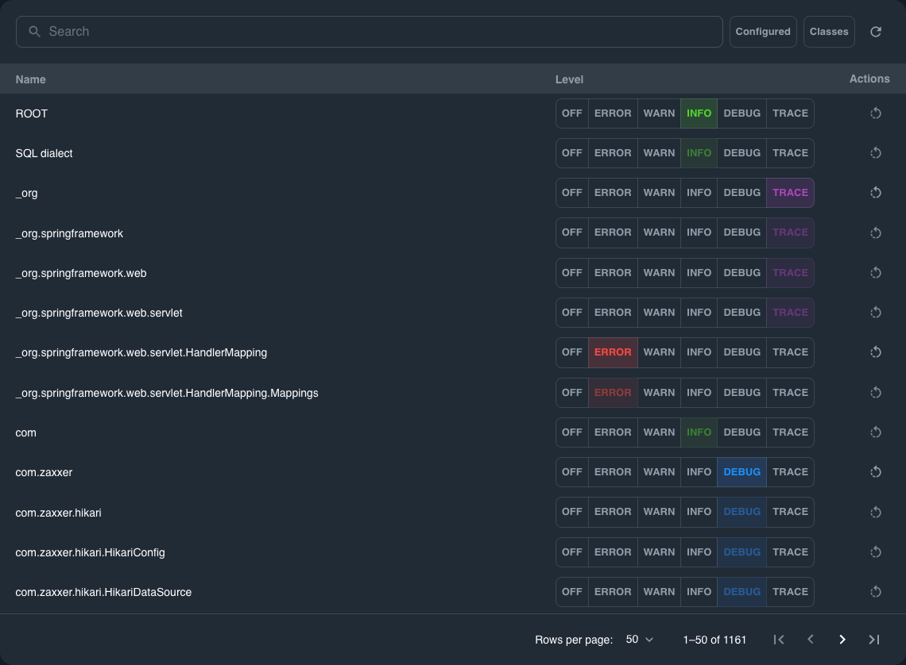
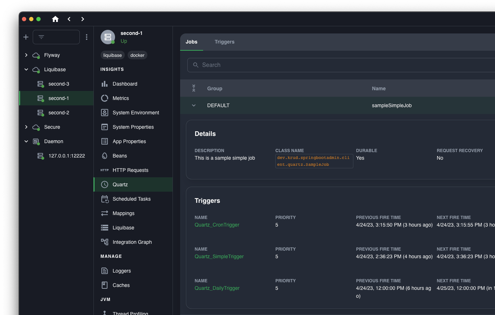

FOSS
Admin App for
Spring Boot
Monitor and Manage Spring Boot Applications
in Real-Time with Ostara for Spring

Monitor
Real-Time status & metrics
Up-to-date information on metrics, health status, thread dumps, log levels and more. Quickly identify and diagnose any issues that arise.
See Docs
Manage
Simple & easy management console
A user-friendly UI for managing log levels, caches, thread dumps and more. No server restarts, no human errors, no problems.
See Docs

Get started in 3 simple steps
No code required, no dependencies, no work. Get up and running in 2 minutes.

Features
Feature highlights


Frequently asked questions
Ostara for Spring is a modern tool for managing and monitoring
actuator-enabled microservices, a Spring Boot Admin alternative, that aims to make the
process more user-friendly and straightforward.
Ostara allows you to gain insights into the performance and health of your applications by providing real-time data of metrics such as CPU and memory usage, app and system properties, beans and their dependencies, and much more. In addition, the app allows you to perform actions on your applications like changing log levels and evict caches.
Ostara allows you to gain insights into the performance and health of your applications by providing real-time data of metrics such as CPU and memory usage, app and system properties, beans and their dependencies, and much more. In addition, the app allows you to perform actions on your applications like changing log levels and evict caches.
After developing and maintaining 100s of microservices, a common pain
point that we faced is monitoring and management of these microservices, for multiple
clients and multiple environments. We used many of the available tools to try and solve this
problem, but many required us to host the solution, and make changes to our services.
No. All you need is a functioning Spring Boot Actuator API. If you are not sure how to do it
check out our Quick Start Guide.
Ostara utilizes all the spring boot actuator endpoints to build a simple and intuitive spring boot admin panel. Without any need for code changes, and completely decoupled from your spring boot applications.
Ostara utilizes all the spring boot actuator endpoints to build a simple and intuitive spring boot admin panel. Without any need for code changes, and completely decoupled from your spring boot applications.
1. Download the app.
2. Add your Actuator API URL.
3. That's it. Everything is ready to manage and monitor your Spring Boot applications with ease.
More info is available in the Quick Start Guide.
2. Add your Actuator API URL.
3. That's it. Everything is ready to manage and monitor your Spring Boot applications with ease.
More info is available in the Quick Start Guide.
The short answer, the setup process.
Spring Boot Admin requires you to host a service and modify your code to get an admin panel. On the other hand Ostara only requires you to install an app on your local machine to gain access to a user-friendly admin panel.
Spring Boot Admin requires you to host a service and modify your code to get an admin panel. On the other hand Ostara only requires you to install an app on your local machine to gain access to a user-friendly admin panel.
Yes! The app's documentation is available at https://docs.ostara.dev/.
The easiest way to get started is with the documentation Quick Start Guide.
Well the best place is our Discord, but if you run into a
bug, create an issue,
and we will be on it ASAP. If all else fails, email us at support@ostara.dev.
If you liked the project and would like to help you can support us
by:
1. Starring the project on Github.
2. Submitting issues for bugs you've found or features you would like to see.
3. Becoming a contributor.
1. Starring the project on Github.
2. Submitting issues for bugs you've found or features you would like to see.
3. Becoming a contributor.

Technical questions
We have many new features in the pipeline, you can check out our open feature requests here.
If you have a suggestion, feel free to create an issue, we periodically go
through them to
prioritize and plan our next release.
Ostara is primarily built to work with Spring Boot Actuator, but it can also work with
frameworks that support Actuator endpoints. You can leverage Ostara alongside existing
monitoring solutions for enhanced insights and management capabilities.
Absolutely! Ostara supports monitoring and managing applications across multiple
environments, including development, staging, and production. You can gain valuable insights
and perform actions on your Spring Boot applications, regardless of the environment they are
deployed in.
Ostara is designed to cater to applications of all sizes, from small-scale deployments to
large-scale architectures. Whether you have a single microservice or a complex microservices
ecosystem, Ostara provides scalable monitoring and management capabilities to suit your
application's needs.
Ostara has modest system requirements, making it accessible for various setups. It can be
installed on different operating systems (Windows, Mac, Linux) and requires minimal
resources, ensuring smooth performance. Detailed system requirements and installation
instructions can be found in the documentation.
Ostara fetches and updates metrics from Actuator endpoints at regular intervals. We cache
the results locally to reduce overhead against your services.
Of course! Ostara seamlessly connects to services deployed in the cloud or containerized
deployments. It can monitor and manage applications running on platforms like Kubernetes,
Amazon Web Services (AWS), Google Cloud Platform (GCP), Microsoft Azure, or any other cloud
provider. All you need to do is expose the Spring Boot Actuator endpoint to your local
device, which can be done publicly or via VPN.
Certainly! We encourage you to add custom pages that display data from your own Actuator
endpoints within Ostara. If your customization is something that others can benefit from, we
invite you to create a pull request and contribute it to the main repository, making it
available for everyone to use.
However, we understand that there may be cases where you prefer to maintain your modifications privately. In such instances, you have the option to fork the repository and work on your own version of Ostara tailored to your specific needs.
We are also excited to inform you that we are currently working on a plugin system for Ostara. This upcoming feature will enable users to develop plugins and extensions to add custom code and functionality to Ostara without the need to modify the core application. This will provide even more flexibility for customization while keeping your modifications separate from the main Ostara codebase.
If you require any assistance while writing custom code or have any questions, please don't hesitate to reach out. We are more than happy to help you out and provide guidance on integrating your custom code or utilizing the plugin system once it becomes available.
However, we understand that there may be cases where you prefer to maintain your modifications privately. In such instances, you have the option to fork the repository and work on your own version of Ostara tailored to your specific needs.
We are also excited to inform you that we are currently working on a plugin system for Ostara. This upcoming feature will enable users to develop plugins and extensions to add custom code and functionality to Ostara without the need to modify the core application. This will provide even more flexibility for customization while keeping your modifications separate from the main Ostara codebase.
If you require any assistance while writing custom code or have any questions, please don't hesitate to reach out. We are more than happy to help you out and provide guidance on integrating your custom code or utilizing the plugin system once it becomes available.